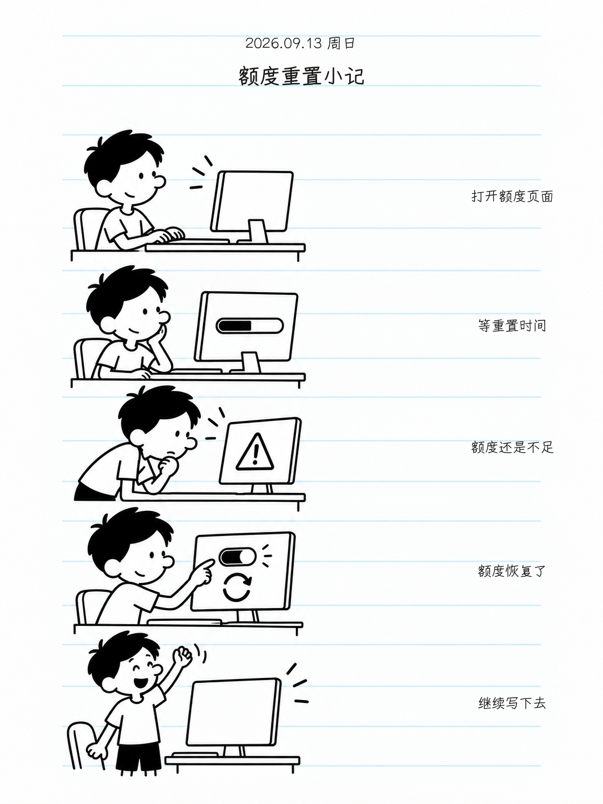

<!doctype html><html lang="zh-CN"><meta charset="utf-8"><title>小屁孩日记</title>
<style>
@font-face{font-family:Yozai;src:url('../fonts/yozai/Yozai-Regular.ttf')}
*{box-sizing:border-box}html,body{margin:0;width:1280px;height:720px;overflow:hidden}body{position:relative}
body{font-family:Yozai,sans-serif;color:#111;background:repeating-linear-gradient(white 0px,white 63px,#d9f1f6 64px,white 65px)}
main{padding:66px 64px}.label{font-size:25px}h1{font-size:68px;font-weight:400;margin:48px 0 26px;line-height:1.25}
p{font-size:30px;line-height:1.65;margin:0}.tags{display:flex;gap:16px;margin-top:42px}.tags span{border:1px solid #111;border-radius:9px;background:white;padding:12px;font-size:23px}
.poster{position:absolute;right:52px;top:34px;width:450px;height:600px;object-fit:contain;background:white;border:1px solid #ccc;box-shadow:9px 12px 18px #00000012}
.book{position:absolute;left:76px;bottom:44px;width:600px;height:190px;object-fit:contain;object-position:left}
.note{position:absolute;right:80px;bottom:38px;font-size:23px}
</style><main><div class="label">小屁孩日记 · Codex Skill</div><h1>把日常，<br>画进日记。</h1>
<p>一段经历，几张照片。<br>留下一页海报，慢慢收成一本日记。</p>
<div class="tags"><span>日记正文</span><span>人物形象</span><span>海报收藏</span></div>
<div class="note">每天一页，翻回那一天。</div></main></html>
